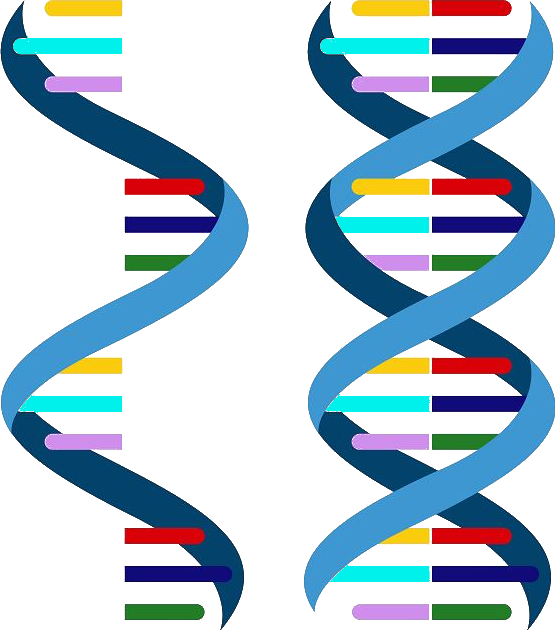

DNA składa się z dwóch skręconych nici ułożonych równolegle do siebie tworząc podwójną helisę. Cząsteczka RNA jest jednoniciowa. Obie cząsteczki zbudowane są z nukleotydów, każdy nukleotyd składa się z reszty kwasu fosforowego, cukru pięciowęglowego i jednej z czterech zasad azotowych.
Nukleotydy tworzące jeden łańcuch są ze sobą połączone wiązaniami fosfodiestrowymi, oba łańcuchy (u DNA) są połączone wiązaniami wodorowymi.

Zasady azotowe wchodzące w skład nukleotydu DNA to: Guanina, Cytozyna, Adenina lub Tymina. W czastęczce RNA zamiast tyminy występuje Uracyl.
Nukleotydy ułożone kolejno w nici tworzą sekwencję. Zapisuje się ją za pomocą liter oznaczających zasady azotowe.
Reguła komplementarności zasad
Zgodnie z regułą komplementarności adenina łączy się z tyminą (lub uracylem w przypadku RNA), a guanina z cytozyną.
Kod genetyczny składa się z kodonów, które kodują poszczególne aminokwasy tworzące białka. Każdy kodon składa się z trzech kolejnych nukleotydów.
Kod genetyczny jest:
- trójkowy
- jednoznaczny
- zdegenerowany
- bezprzecinkowy
- niezachodzący
- uniwersalny
Sposób odczytywania informacji genetycznej
Informacja genetyczna zawarta jest w DNA. DNA składa się z dwóch nici - kodującej i matrycowej. Nici te związane są ze sobą wiązaniami wodorowymi spełniającymi regułę komplementarności. Informacja genetyczna jest przepisywana z nici matrycowej na mRNA. Na podstawie sekwencji mRNA tworzony jest łańcuch aminokwasów budujących białko.